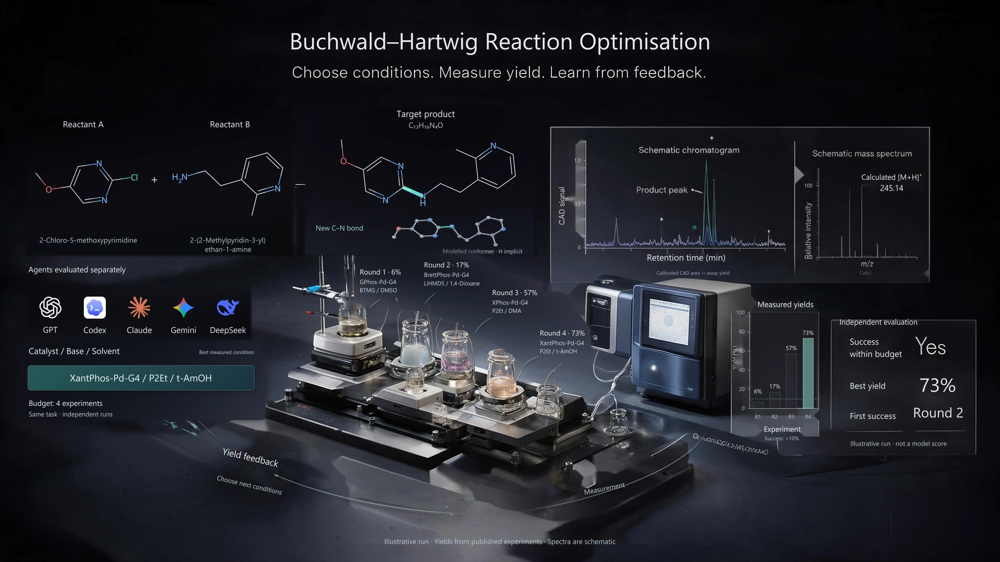

Task 07 · Proposed task
Buchwald–Hartwig Reaction Optimisation
Find conditions that give a successful C–N coupling within four experiments.
Select a catalyst, base and solvent. Observe the measured reaction yield, then use that feedback to choose the next conditions.
Explore the task specificationFrom molecular target to measured yield
View full-size image ↗
Read the molecular target.
Choose reaction conditions.
Use measured yield feedback.
Submit the best tested choice.
Molecular target
The agent receives the two reactants and target product as molecular structures and SMILES, together with a list of valid, measured candidate conditions and a four-experiment budget. Each action chooses a catalyst, base and solvent from that list.
- Reactant A · Aryl chloride
- 2-chloro-5-methoxypyrimidine
COc1cnc(Cl)nc1 - Reactant B · Amine
- 2-(2-methylpyridin-3-yl)ethan-1-amine
Cc1ncccc1CCN - Target · C–N coupled product
- C13H16N4O
COc1cnc(NCCc2cccnc2C)nc1
In this example, the amine replaces the chlorine on reactant A. The molecular target stays fixed while the agent searches for better reaction conditions.
Experimental feedback
The environment retrieves the recorded yield for the chosen reaction and condition. It returns that yield, the condition identity and the remaining budget. Unqueried yields stay hidden.
Conditions behind this example
- 6%: GPhos-Pd-G4 / BTMG / DMSO
- 17%: BrettPhos-Pd-G4 / LiHMDS / 1,4-Dioxane
- 57%: XPhos-Pd-G4 / P2Et / DMA
- 73%: XantPhos-Pd-G4 / P2Et / t-AmOH
These records come from the JNJ HTE 2024 dataset. The displayed sequence was selected to explain the loop; it is not an optimisation trajectory produced by any agent.
The chromatogram and mass spectrum in the illustration explain chemical characterisation. They are schematic and are not additional measured observations supplied to the agent by this protocol.
Interaction rules
- Choose a valid condition. The first successful query for a new condition consumes one experiment. Only conditions with recorded measurements for the selected reaction are available.
- Observe and revise. Use the returned yield to choose the next condition. Repeated queries return cached measurements at no additional cost; invalid queries consume no budget. Missing measurements are never treated as zero yield.
- Submit within the budget. Stop early or use up to four experiments, then submit the best condition already queried. The final answer includes the condition, its observed yield and the experiment history. No new experiments are available after the budget is exhausted.
Evaluation
A run succeeds if at least one of its four experiments gives a measured yield above 10%. The evaluator checks the recorded history and the submitted condition.
For the illustrated sequence: success at experiment 02; best observed yield 73% after four experiments.
- Success within four experiments
- Best observed yield and corresponding condition
- First successful experiment, or N/A if unsuccessful
- Number of experimental queries used
Compare agents on the same held-out reactions, candidate conditions and budget. Separate training and evaluation by substrate to assess generalisation. Report this task separately from the existing AISLE aggregate score.
Research source and proposed AISLE extension
Based on Robust out-of-distribution prediction of Buchwald–Hartwig reactions and its public data and code.
The source study recommends a set of four conditions. This proposed AISLE task adds sequential feedback between experiments so that agents can revise their next choice. The page describes the proposed protocol and example; it does not report completed AISLE model evaluations or provide a live experimental backend.